Nadštandardný 2-izbový byt v novostavbe Prístavná 1 v blízkosti downtownu, 66 m2
Ružinov, Bratislava
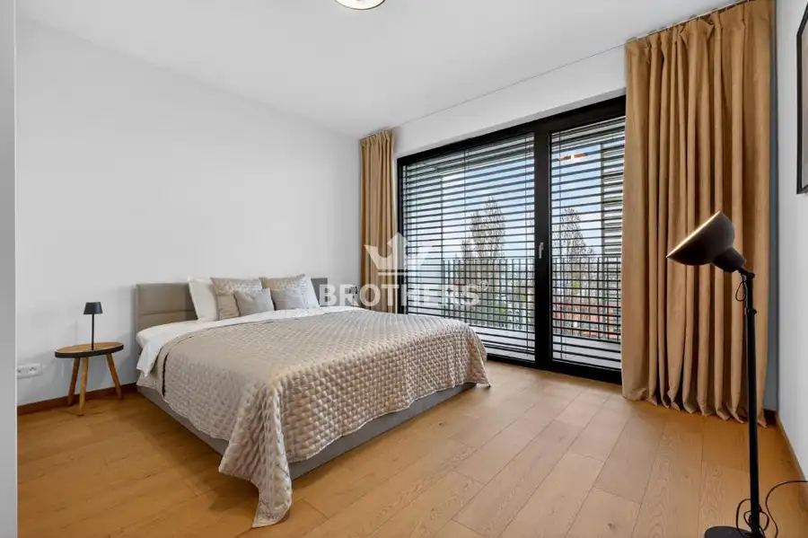
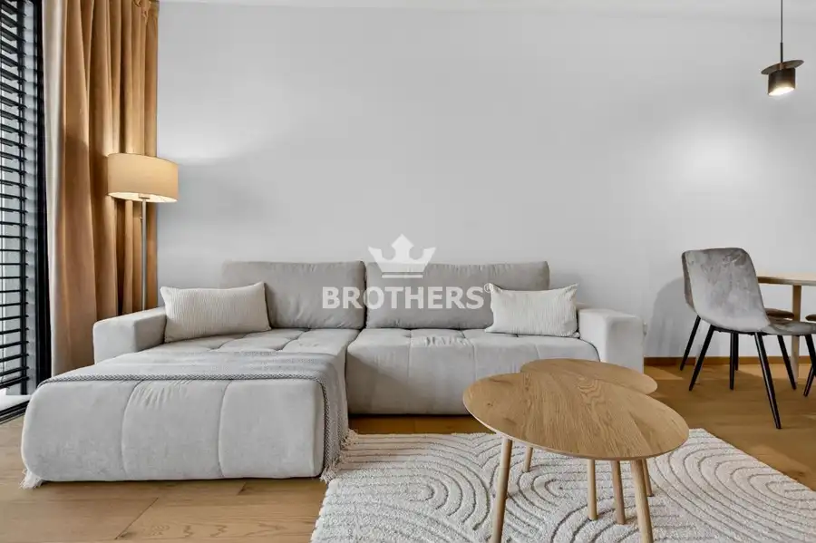
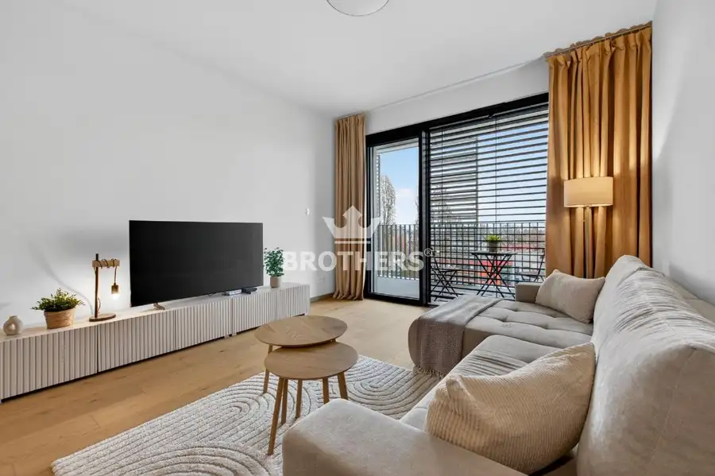
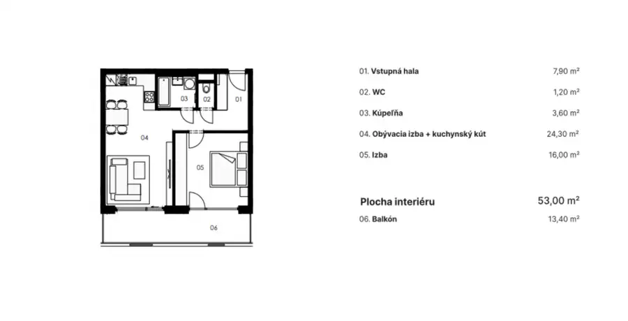
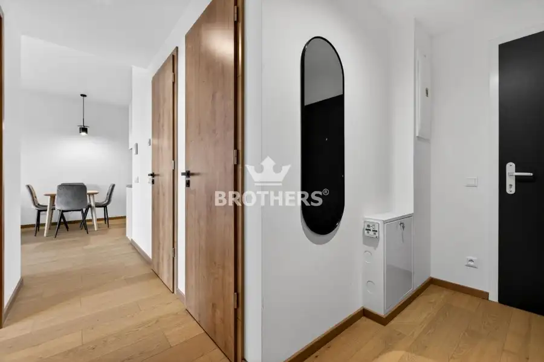
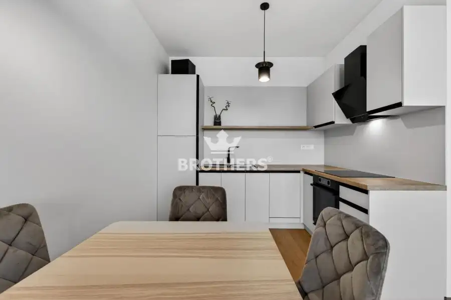
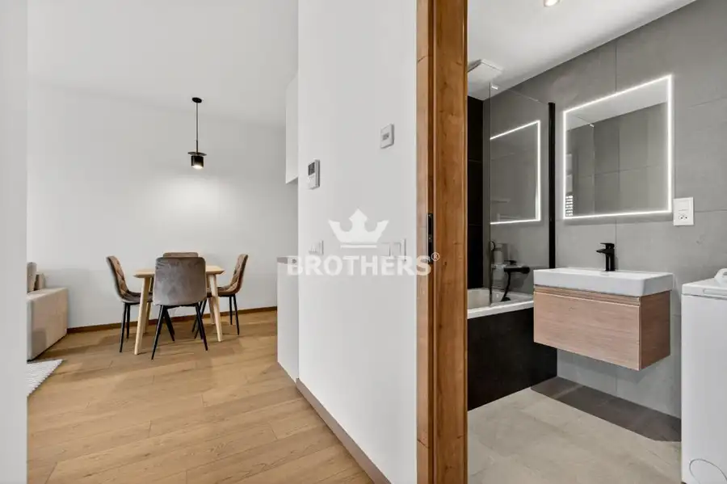
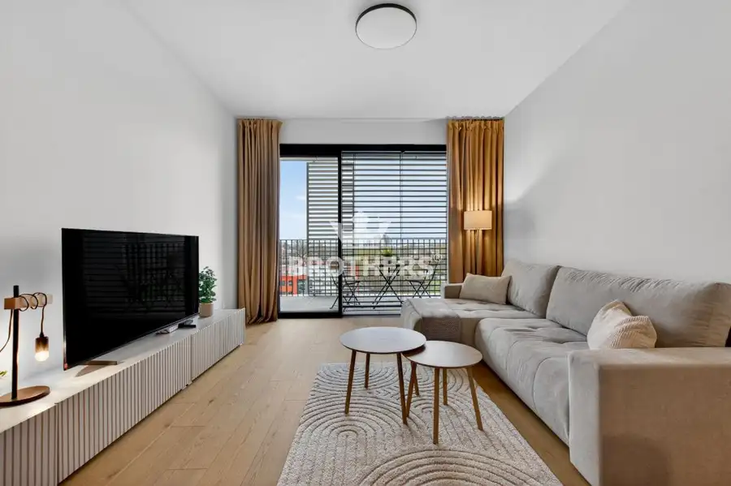
- Dispozícia2-izbový
- Plocha66 m²
- Poschodie5. z 8
- StavNovostavba
- VlastníctvoOsobné
- Energetická triedaA
O nehnuteľnosti
Ponúkame Vám exkluzívne na prenájom nadštandardný 2-izbový byt s priestrannou terasou v novom projekte Prístavná 1 situovanom len na skok od bratislavského downtownu. Lokalita, vysoký štandard či dispozičné riešenie bytu ponúknu svojim obyvateľom unikátne a komfortné bývanie s výhľadmi na Dunaj v novovzniknutej štvrti Nív. Byt je veľmi slnečný, má perfektnú dispozíciu a je zariadený štýlovým nábytkom na mieru vrátane kuchynskej linky so zabudovanými spotrebičmi. V byte je stropné chladenie a podlahové kúrenie. Okná sú hliníkové veľkoformátové s tepelno-akustickým izolačným trojsklom a externými žalúziami s elektrickým pohonom. Podlaha v interiéri je dubová prírodná dýha a na loggii je gresová dlažba. K bytu prislúcha pivničná kobka umiestnená na rovnakom podlaží a parkovacie miesto v podzemnej garáži za príplatok. Byt je voľný k nasťahovaniu od 20.11.2026. Obhliadky sú možné ihneď. CHARAKTERISTIKA:- 2-izbový byt- interiér 53 m2 + loggia 13,40 m2 + kobka 1,90 m2- poschodie: 4/8- priestranná terasa- nerušený výhľad na mesto- stropné chladenie - podlahové kúrenie- externé elektrické hliníkové žalúzie- veľkoformátové okná - drevená podlaha vo vyhotovení dub- recepcia LOKALITA:Novostavba je situovaná v blízkosti nového downtownu s výborným napojením na diaľnicu D1, do centra a ostatných častí mesta. V pešej dostupnosti sa nachádza obchodné centrum Eurovea, NIVY, Apollo Business Center, gastro prevádzky, školy, MHD, obchody a kompletná občianska vybavenosť. Priamo pri bytovom dome sa nachádza nová zástavka MHD.PARKOVANIE:K bytu prislúcha parkovacie miesto v garáži na -1. podzemnom podlaží za príplatok 150€/mesačne.CENA:950 €/mesiac + 230 € energie + 150 € parkovacie miesto v garážiSpolu 1330 €/mesiac Bližšie informácie Vám radi poskytneme na obhliadke.KONTAKT:Pre viac informácií a ohľadom obhliadky kontaktujte prosím makléra:Mgr. Adriána Kminiaková+421 917 525 744, adriana.kminiakova@brothersreal.com COPYRIGHT BROTHERS Real, s.r.o. – Text je autorským dielom a majetkom realitnej kancelárie BROTHERS Real, s.r.o.
Parametre
- Cena vrátane energií
- Nie
- Druh
- 2 izbový byt
- Dátum zverejnenia
- 30. 09. 2026
- Energetický certifikát budovy
- A
- Energie
- 230
- Podlažie
- 5
- Počet izieb / miestností
- 2
- Počet lodžií
- 1
- Počet nadzemných podlaží
- 8
- Počet parkovacích miest v garáži
- 1
- Počet spální
- 1
- Rok kolaudácie
- 2024
- Rok výstavby
- 2024
- Stav nehnuteľnosti
- Novostavba
- Telekomunikácie
- Optická sieť, Internet
- Typ
- Prenájom
- Typ konštrukcie
- Zmiešaná, Železobetónová
- Vlastníctvo
- Osobné
- Vybavenie
- Výťah, Lodžia, Garážové státie
- Vykurovanie
- Podlahové
- Úžitková plocha
- 66 m²
Kde to je


Mohlo by Vás zaujímať
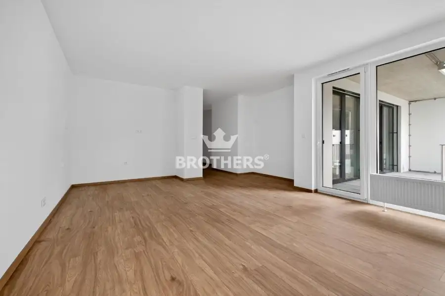
BytNové 319 000 €Agáty - Nadštandardný 3-izbový byt s bazénom v novostavbe AGÁTY, 83 M2, Dúbravka Dúbravka, Bratislava 3-izbový82.89 m²2. podlažie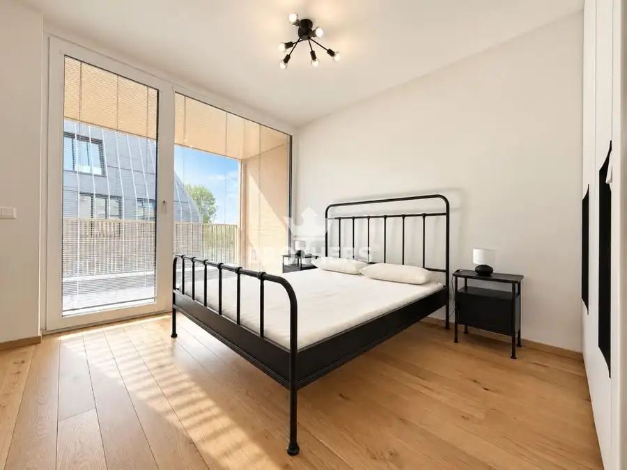
BytNové 1 000 €Vydrica - nadštandardný 2-izbový byt na nábreží Dunaja s veľkou loggiou Staré Mesto, Bratislava 2-izbový55 m²3. podlažie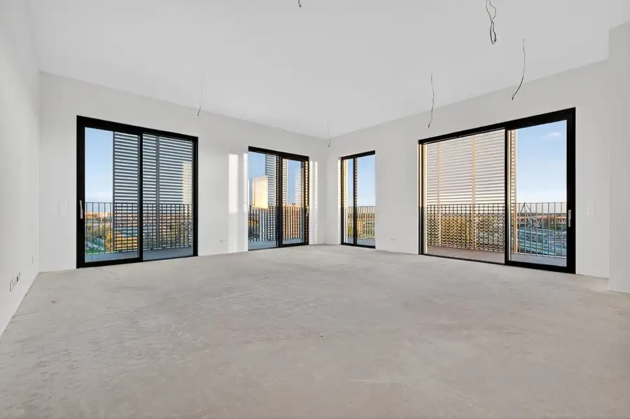
BytNové Cena na vyžádáníVeľkometrážny 4-izbový penthouse v blízkosti downtownu, 200 m2, možný odpočet DPH Ružinov, Bratislava 4-izbový200 m²9. podlažie